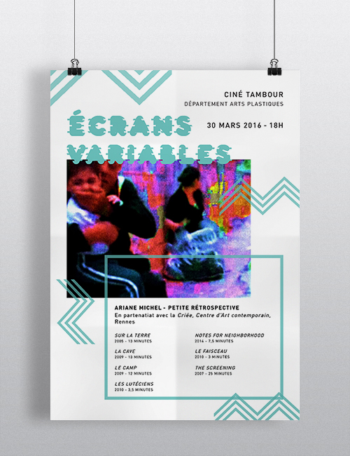

ecrans variables
I have created this series of posters
for the "Ecrans Variables" festival.
It is an independent cinema festival organised by the Rennes university.
Each posters is designed on the same way : they detailled the line up and showed a photo of a famous
film scene. All those elements are organised thanks to simple shapes as squares, zigzags which represent
all the movement and dynamic around the festival.
March, 2016